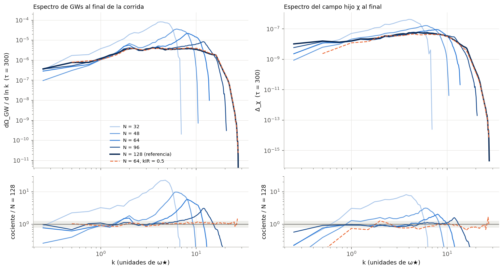
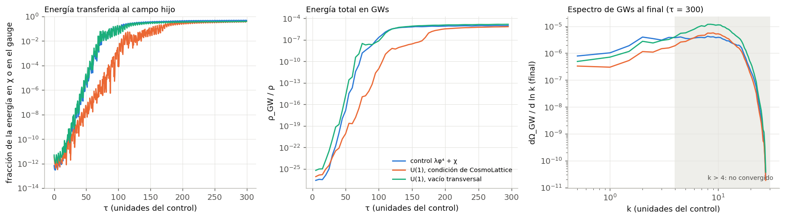

Proyecto final — Ondas gravitacionales e investigación asistida por IA, UBA 2026
En curso — resultados preliminares al 24 de septiembre de 2026¿No sos de física? Empezá por la bitácora, que cuenta el proyecto desde cero y en lenguaje llano, con un glosario. ¿Nunca usaste CosmoLattice? Qué es CosmoLattice explica cómo pone campos escalares y de gauge U(1)/SU(2) en una red, y las ecuaciones detrás de los espectros de ondas de este proyecto.
Al terminar la inflación, el campo que la impulsó (el inflatón) oscila y le pasa su energía a otros campos de forma violenta: es el recalentamiento. Las configuraciones de campo inhomogéneas que resultan tienen estrés anisotrópico y producen un fondo estocástico de ondas gravitacionales. Casi todo lo publicado supone que la energía va a campos escalares. Cuando va a un campo de gauge, su propia energía-momento contribuye a ese estrés, y su dinámica puede ser muy distinta de la resonancia escalar. El proyecto pregunta cuánto de la forma del espectro de ondas (frecuencia y altura del pico, pendientes a cada lado) se debe al campo de gauge, manteniendo fijo el resto del modelo.
Tres modelos que ya trae CosmoLattice, todos con
potencial λφ4: lphi4 (solo escalares, el control),
lphi4U1 (inflatón con carga U(1), o sea electrodinámica escalar) y
lphi4SU2U1 (SU(2)×U(1), parecido al sector electrodébil). Los valores por
defecto de los tres no son comparables, así que se fijaron parámetros emparejados
(Parámetros comparables, decididos el 22 de septiembre):
λ = 9×10−14, el inflatón arrancando en el mismo estado de fin de la
inflación, y un único canal resonante con q = 120 en cada modelo. Las cuentas de unidades y de la
ley de Gauss están verificadas en Bases teóricas.
| etapa | estado | dónde |
|---|---|---|
| Pregunta, enfoque, bibliografía | hecho | README.md, bibliografía/ |
Compilar CosmoLattice (lphi4, lphi4U1, lphi4SU2U1) | hecho | README.md |
| Parámetros comparables entre los tres modelos | hecho | Parámetros comparables |
Control lphi4, validado contra Dufaux et al. (2007) | hecho | El piloto del control, bitácora §3.1–3.2 |
| Elegir la resolución de la red | hecho | bitácora §3.3 |
lphi4U1 (con la condición inicial de CosmoLattice y con vacío transversal) | hecho, una semilla | bitácora §3.4 |
Más semillas del control y de lphi4U1 | pendiente | |
lphi4SU2U1 (revisar su condición inicial y correr, ~11 h) | pendiente |
El control lphi4 (N = 128) reproduce a Dufaux et al. (2007): el pico del espectro
hoy da h²ΩGW ≈ 3,8×10−11 a 9,7×107 Hz
(con la convención de Dufaux), contra ~3×10−11 a 1,2×108 Hz del
paper llevado al mismo λ. La resonancia crece al ritmo que predice la teoría de Floquet
(μ = 0,2002 medido contra 0,199) (detalle).
Con la misma caja, bajar el número de puntos por lado N amontona energía de ondas en el borde de la red y aparece un pico falso. Con la caja a la mitad, 64 puntos dan el mismo espectro que 128 (la energía total en ondas coincide a 0,3 %), 8 veces más rápido. Una corrida con el doble de alcance mostró que ninguna de las dos resuelve bien k > 4, así que la comparación entre modelos se apoya en el pico y en las longitudes de onda largas (k ≲ 4).

code/convergencia_N.py.CosmoLattice arranca el campo de gauge sin sus modos transversales, que son los que resuenan y
producen ondas. Solo pone la parte longitudinal que exige la ley de Gauss (paper del código,
arXiv:2102.01031, ecs. 97–102). El campo hijo del control, en cambio, arranca con fluctuaciones de
vacío. Con esa condición, la resonancia gauge llega ~40 unidades de tiempo tarde. Un parche a
CosmoLattice (code/parches/) les da fluctuaciones de vacío a los modos transversales,
sin tocar la ley de Gauss. Con él, la resonancia gauge va a la par de la del control. En las dos
versiones el campo magnético crece al ritmo de Floquet con q = 120: lo único que cambia es desde
qué tamaño arranca.
| misma red (N = 64, caja a la mitad), unidades del control | control | U(1), como arranca CosmoLattice | U(1), con vacío transversal |
|---|---|---|---|
| el campo hijo/gauge llega al 1 % de la energía (τ) | 68 | 105 | 68 |
| espectro de ondas en k = 0,5–2,5, respecto del control | 1 | 0,28–0,42 | 0,61–0,69 |
| energía total en ondas, respecto del control | 1 | 0,71 | 1,53 (dominada por k > 4, no convergido) |

code/comparar_modelos.py.Lectura provisoria: con las dos resonancias arrancando igual, el modelo con campo de gauge produce en la parte confiable del espectro alrededor de 0,65 veces las ondas del control. Es una sola semilla, y falta medir cuánto varía el resultado con el azar de las condiciones iniciales antes de tomarlo como resultado.
Cada figura y número de esta página tiene un registro en
provenance/claims.yaml y
provenance/numbers.json: qué lo produjo, qué se
escribió desde cero y qué vino de CosmoLattice o de una biblioteca, y cada elección que tenía una
alternativa razonable.